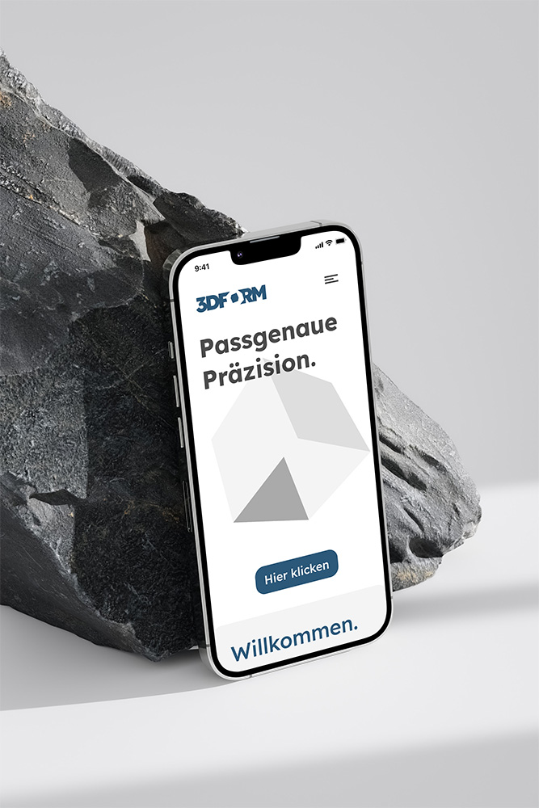
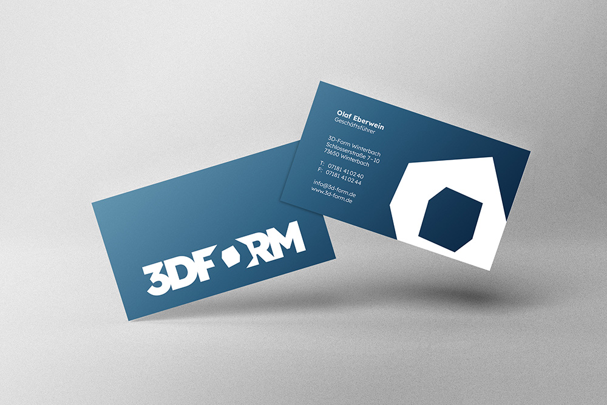
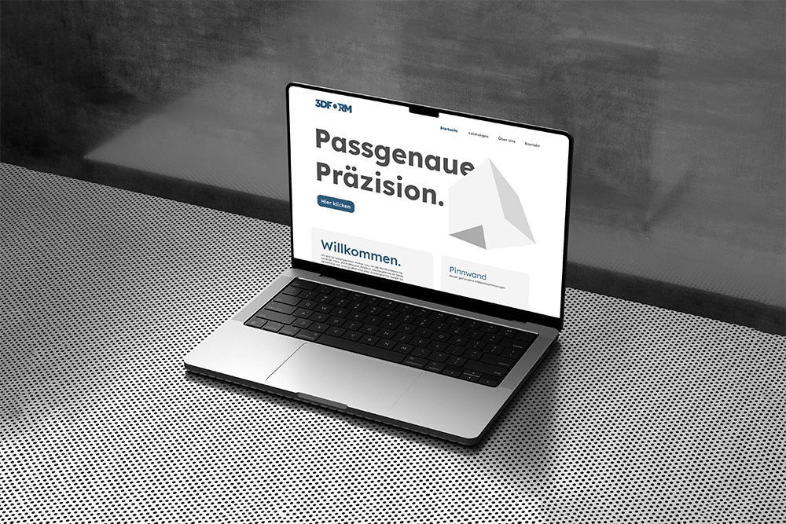

3D-Form
Personal project
December 2021
This project was a fictional job, where we had to develop a complete corporate identity for an existing company. I chose 3D-Form, which is based in Stuttgart and specializes in metal processing and measuring/testing technology. The logo I designed supports the company's steadfastness and stability. It conveys precision and inspires confidence. The »O« in 3D-Form is a cube in which the negative color space represents the hallmark. The rest is »milled« from the logo to match the company's working area. To support the suggestion of trust, the entire color scheme is kept a shade of blue. In color psychology, blue stands for the calm, the balance and the vastness.
The logo also exists in black and white and grayscale to create a powerful effect with colorless company stamps or as a display print. There are two versions of the logo. The first is the wordmark, which can be used everywhere, and the second is the figurative mark, which was created from the »O« in the word mark. This is used for areas of application that are not so broad in scope. Everything else is built around that concept—the letterheads, envelopes, business cards, miscellaneous merchandise articles, and the prototype for a website, which I made in Adobe XD.
3D-Form
Persönliches Projekt
Dezember 2021
Dieses Projekt war eine fiktive Auftragsarbeit, bei der eine vollständige Corporate Identity für ein bestehendes Unternehmen entwickelt werden sollte. Ich entschied mich für 3D-Form, ein in Stuttgart ansässiges Unternehmen, das sich auf Metallverarbeitung sowie Mess- und Prüftechnik spezialisiert hat. Das von mir entwickelte Logo unterstützt die Werte Beständigkeit und Stabilität des Unternehmens. Es vermittelt Präzision und schafft Vertrauen. Das »O« in 3D-Form ist als Würfel gestaltet, in dessen negativem Farbraum sich das prägende Gestaltungselement befindet. Die übrigen Formen sind gewissermaßen aus dem Logo »herausgefräst«, um einen direkten Bezug zum Tätigkeitsfeld des Unternehmens herzustellen. Zur Unterstützung der vertrauensbildenden Wirkung ist die gesamte Farbgestaltung in einem Blauton gehalten. In der Farbpsychologie steht Blau für Ruhe, Ausgewogenheit und Weite.
Das Logo existiert zudem in Schwarz-Weiß sowie in Graustufen, um auch bei farblosen Firmenstempeln oder als Druckvariante eine prägnante und kraftvolle Wirkung zu erzielen. Es gibt zwei Versionen des Logos: Zum einen die Wortmarke, die universell eingesetzt werden kann, und zum anderen die Bildmarke, die aus dem »O« der Wortmarke abgeleitet wurde. Diese kommt insbesondere in Anwendungsbereichen mit begrenztem Platz oder geringerer gestalterischer Breite zum Einsatz. Alle weiteren Gestaltungselemente bauen auf diesem Konzept auf – darunter Briefbögen, Umschläge, Visitenkarten, verschiedene Merchandise-Artikel sowie ein Prototyp für eine Website, den ich in Adobe XD erstellt habe.

